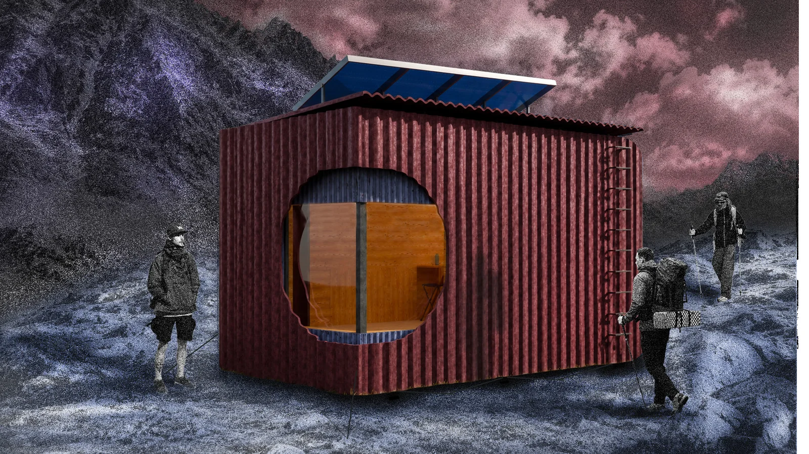
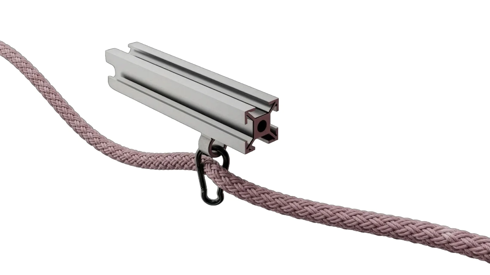
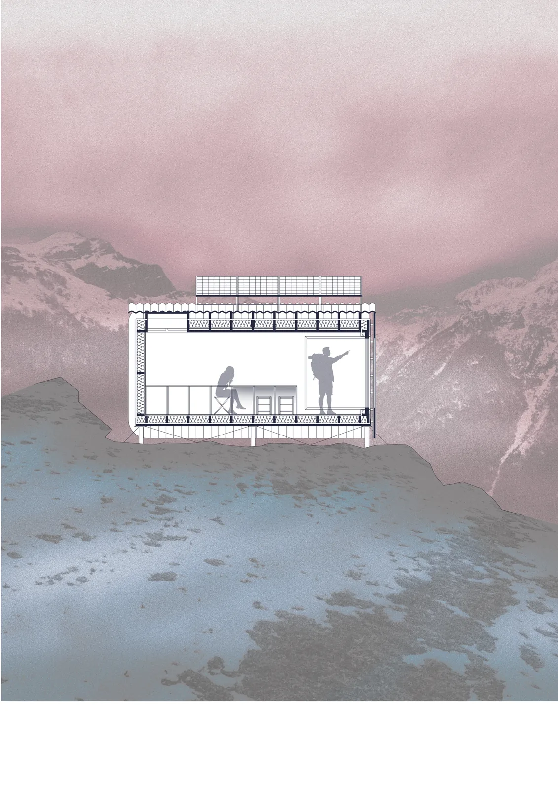
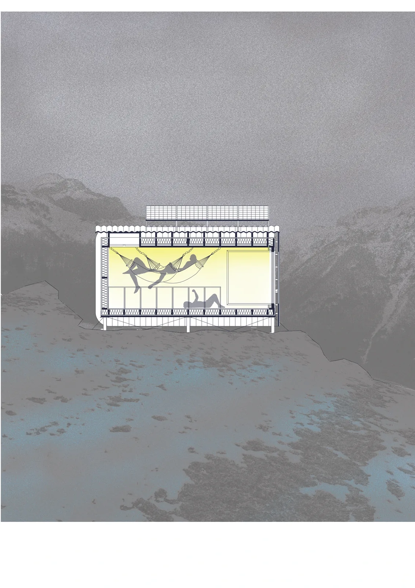
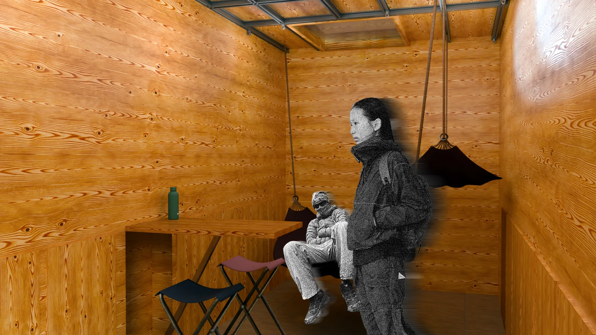
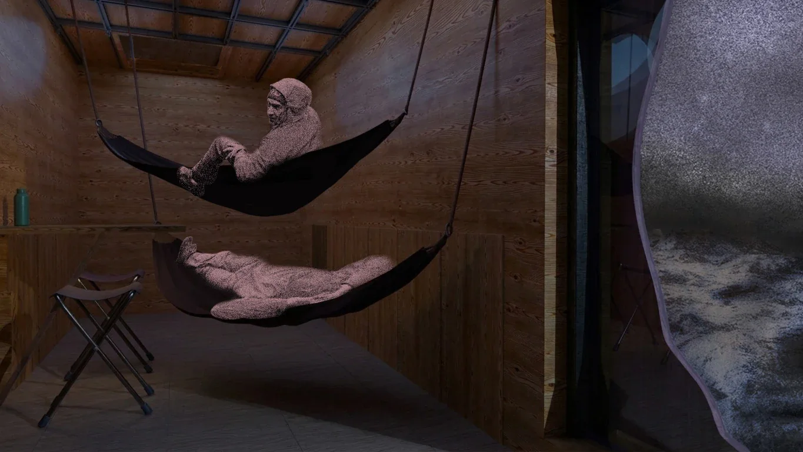
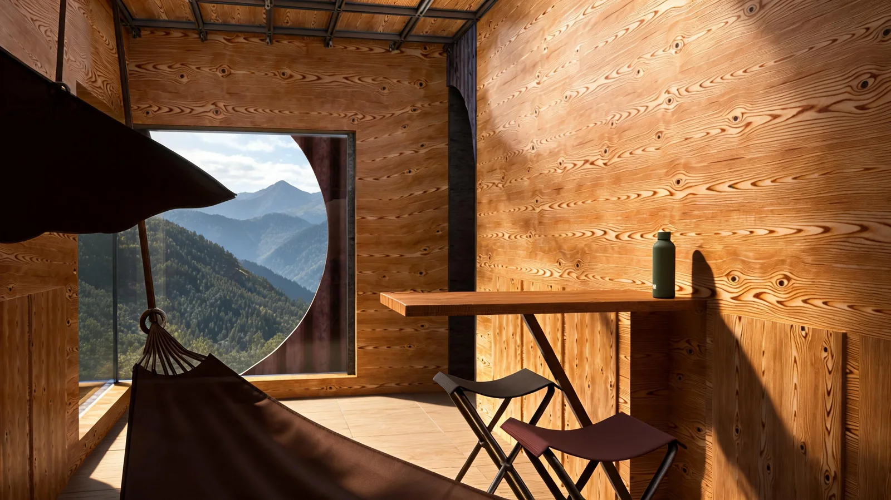
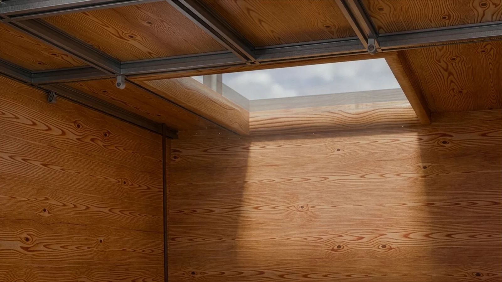
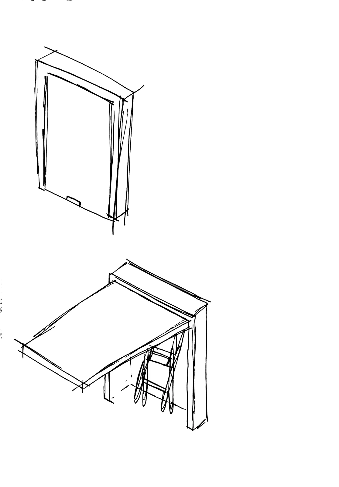

BIVACUUM
Abitare la quota. Liberare lo spazio.
- Corso
- Laboratorio di Design Alpino · Sezione 4 Interni
- Sede
- Politecnico di Milano · A.A. 2025/26
- Docenti
- Roberto Domenico Boni, Aldo Faleri
- Luogo
- Grignetta · bivacco alpino
- Capienza
- Almeno 8 persone
- Gruppo
- Filippo Antonio Visentin, Anton Qerkini
- Ambito
- Architettura · Spazio minimo · 2026

Come può uno spazio minimo accogliere modi diversi di stare insieme?
La montagna incontra il mio interesse per i sistemi trasformabili: partire dai gesti di chi arriva, si riposa e riparte.
Un rifugio per almeno otto persone, pensato per la Grignetta. Una struttura trasportabile e preassemblata accoglie un interno capace di cambiare tra il riposo e la vita condivisa.
Il soffitto diventa infrastruttura: i binari permettono di sospendere le amache e riconfigurare l’ambiente. Tavoli ripiegabili e sedute integrate liberano il pavimento. Involucro, fondazioni a vite e pannelli fotovoltaici orientabili sono parti di un unico sistema.
Arrivare e trovare riparo
Il brief prevede almeno otto posti, uso nelle diverse stagioni e una struttura preassemblata con montaggio ridotto sul posto. Il contesto è un terrazzo naturale sul percorso verso la Grignetta, pensato come punto di riparo e sosta. La compattezza risponde sia all’abitare sia al trasporto e all’installazione.


Il soffitto libera il pavimento
Una rete di binari permette di appendere e spostare le amache. Di giorno l’interno diventa uno spazio comune; di notte le superfici sospese accolgono il riposo. Tavoli a parete ripiegabili e sedute integrate riducono gli ingombri fissi: la trasformazione nasce da operazioni semplici, leggibili negli schizzi e nelle sezioni.
Pensare per strati e connessioni
L’involucro studiato nel progetto combina compensato interno, struttura lignea, vuoto tecnico, barriera al vapore, isolamento in lana di pecora, camera ventilata e rivestimento metallico. Le tavole approfondiscono anche le fondazioni a vite e il sistema fotovoltaico a inclinazione regolabile. Sono soluzioni di progetto da leggere insieme, alla scala del dettaglio e dell’insieme.

Giorno / notte — la stessa sezione, due usi
2 immagini

Processo — immagini e disegni
6 immagini
F.06Interno — giorno 
F.07Interno — notte 
F.08L’oblò sulla valle 
F.09Il lucernario e il soffitto attrezzato 
F.10Schizzo — la griglia strutturale 
F.11Schizzo — i tavoli ripiegabili